📊 学习总览
📅 本周学习时长
各科正确率
🎯 本周目标进度
🔥 待复习错题
暂无待复习错题
📝 每日学习记录
历史记录
错题本
📅 学习计划
🔄 今日待复习
0 题📋 上周计划
0%🎯 本周计划
0%📌 下周计划
—📊 总进度横道图
📒 康奈尔学习笔记
第0讲 结构判定（自由度与约束）
2026-09-17🔑 核心概念
- 自由度（DOF）：确定体系位置所需的独立坐标数
- 约束：减少自由度的装置
- 多余约束：不减少自由度的约束
- 静定/超静定：能否仅用平衡方程求解
❓ 关键问题
- 怎么算自由度？
- 约束数量与自由度的关系？
- 怎样判定可变/静定/超静定？
- 超静定次数怎么算？
一、自由度公式
刚片体系： W = 3m - (3g + 2h + b)
| m | 刚片数（不含地基） |
| g | 单刚结数 |
| h | 单铰结数 |
| b | 支座链杆数 |
链杆体系： W = 2j - b
| j | 铰结点数（含支座铰） |
| b | 链杆数（含支座链杆） |
二、常见约束类型
三、判定准则
四、超静定次数
n = -W = (3g + 2h + b) - 3m
链杆体系：n = b - 2j
📝 总结
一句话：自由度 W 是约束与需求的差值。W>0 可变，W=0 静定，W<0 超静定。算 W 关键是数对刚片数、铰数、链杆数，注意复铰折算。
⚠️ 易错点
- 复铰 = (n-1) 个单铰，别数漏
- W=0 不一定静定，还要看约束布置
- 公式里 m 不含地基，要统一
📝 练习题
基础题1：计算图示体系的自由度W：刚片数 m=3，单铰数 h=3，支座链杆 b=3。判断该体系是几何不变、瞬变还是常变？
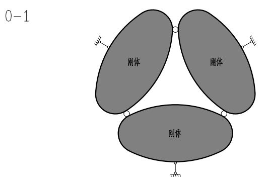
💡 查看答案
W = 3×3 - (0 + 2×3 + 3) = 9 - 9 = 0
W=0，还需检查约束布置。若三铰不共线，则几何不变（静定结构）。
陷阱题2：图示体系：4个刚片，其中有一个铰连接了3个刚片（复铰），另有2个单铰，支座链杆4根。求自由度W，判断几何性质。
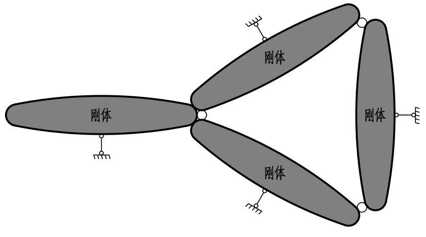
💡 查看答案
复铰连接3个刚片 = (3-1)=2个单铰
总单铰数 = 2 + 2 = 4
W = 3×4 - (0 + 2×4 + 4) = 12 - 12 = 0
W=0，检查约束布置，若无三铰共线等问题，则几何不变。
进阶题3：图示简单桁架：5个结点（含2个支座铰），7根杆件（含3根支座链杆）。求自由度W，判断是否为静定结构。
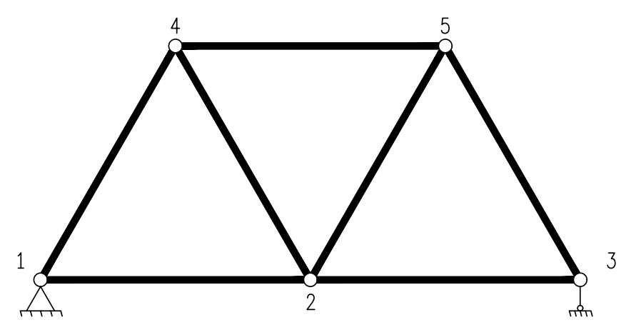
💡 查看答案
链杆体系：W = 2j - b = 2×5 - 7 = 3
W=3>0，体系几何可变（常变），不是结构！
若要成为静定结构，需增加3根链杆使W=0。
第1讲 静定梁内力计算
2026-09-17🔑 核心概念
- 内力：弯矩 M、剪力 V、轴力 N
- 截面法：求内力的基本方法
- 符号规定：正负号规则
- 内力图：M图、V图绘制
❓ 关键问题
- 截面法怎么求内力？
- M、V 正负号怎么规定？
- M、V 微分关系？
- 叠加法怎么画 M 图？
一、截面法（核心）
Step 1 → 截：在需求内力处假想截开
Step 2 → 取：取其中一部分为隔离体
Step 3 → 平衡：列平衡方程
- ΣFx = 0 → 轴力 N
- ΣFy = 0 → 剪力 V
- ΣM = 0 → 弯矩 M
二、内力符号规定
三、微分关系
dV/dx = -q(x)
dM/dx = V(x)
d²M/dx² = -q(x)
四、叠加法常用值
五、多跨静定梁
📝 总结
一句话：截面法是核心，平衡方程求内力；M图画在受拉侧，V图注意正负号；利用微分关系快速画图，叠加法简化复杂荷载。
⚠️ 易错点
- M图画在受拉侧，不标正负
- 集中力偶处 M 突变，别漏
- 多跨静定梁从附属部分开始算
- V=0 对应 M 极值，可校核
📝 练习题
基础题1：简支梁AB，跨度L=6m，跨中C点作用集中力P=20kN↓。求：(1)支座反力RA、RB；(2)C截面弯矩MC和剪力FQC；(3)绘制M图和FQ图。
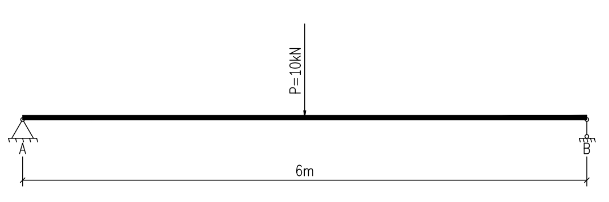
💡 查看答案
对称结构对称荷载：RA = RB = P/2 = 10 kN ↑
MC = PL/4 = 20×6/4 = 30 kN·m
FQC = 0（对称点剪力为零）
M图：三角形，跨中最大30kN·m；FQ图：左段+10，右段-10
进阶题2：简支梁AB，跨度L=8m，全跨均布荷载q=5kN/m↓。求：(1)支座反力；(2)跨中弯矩和剪力；(3)距A支座2m处内力。
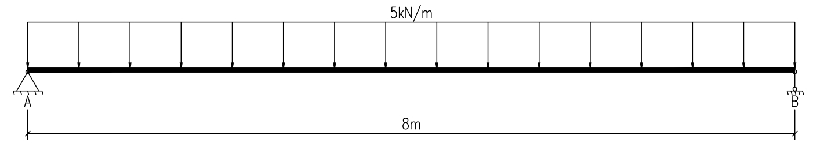
💡 查看答案
RA = RB = qL/2 = 5×8/2 = 20 kN ↑
跨中：M = qL²/8 = 5×64/8 = 40 kN·m，FQ = 0
距A 2m处：M = 20×2 - 5×2²/2 = 30 kN·m
FQ = 20 - 5×2 = 10 kN
挑战题3：外伸梁ABC，A固定铰，B滚动铰，AB=4m，BC=2m（外伸）。AB段q=10kN/m↓，C端P=15kN↓。求：(1)支座反力；(2)B截面左、右侧剪力；(3)AB段最大弯矩及位置。
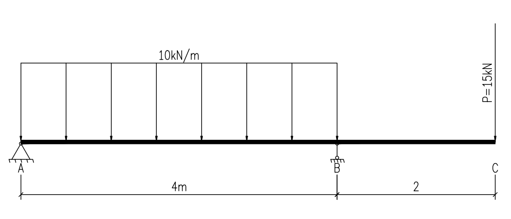
💡 查看答案
∑MA=0：RB×4 = 10×4×2 + 15×6 → RB = 190/4 = 47.5 kN ↑
∑Fy=0：RA = 10×4 + 15 - 47.5 = 7.5 kN ↑
B左：FQ = 7.5 - 10×4 = -32.5 kN
B右：FQ = -15 kN（仅外伸段荷载）
AB段V=0处：x = 7.5/10 = 0.75m，Mmax = 7.5×0.75 - 10×0.75²/2 = 2.81 kN·m
第2讲 静定桁架内力计算
2026-09-17🔑 核心概念
- 桁架：直杆铰接，荷载作用于结点
- 理想假设：杆件只受轴力
- 结点法：逐结点平衡
- 截面法：截断求解
- 零杆：N=0 的杆件
❓ 关键问题
- 理想桁架假设条件？
- 结点法怎么逐点求解？
- 截面法怎么截？
- 怎么快速判断零杆？
一、理想桁架假设
- 所有结点为理想铰
- 杆件为直杆，轴线过铰心
- 荷载和反力全部作用在结点上
- 杆件自重忽略（或等效移至结点）
结论：每根杆件只受轴力（拉力或压力）
二、结点法
每个结点 2个方程（ΣFx=0, ΣFy=0）→ 最多求 2个未知力
步骤：
- 求支座反力
- 找只有2根未知杆的结点开始
- 设未知力为拉力（背离结点）
- 正值→拉力，负值→压力
三、零杆判定（高频考点！）
四、截面法
截面最多截断 3根未知杆（3个方程）
技巧：
- 力矩法：选两未知力交点为矩心
- 投影法：沿某方向投影消去未知力
五、方法选择
| 情况 | 推荐方法 |
|---|---|
| 求全部杆件内力 | 结点法 |
| 只求某几根杆 | 截面法 |
| 截不断(>3未知) | 结点法配合 |
六、对称性利用
- 对称荷载：对称位置杆件内力相同
- 反对称荷载：对称位置杆件内力大小相等、符号相反
📝 总结
一句话：桁架杆件只受轴力；结点法逐点平衡（≤2未知），截面法截断求解（≤3未知杆）；先判零杆减少计算，善用对称性减半工作量。
⚠️ 易错点
- 零杆不是没用的杆，别随意删除
- 设拉力为正，负值=压力，别搞反
- 截面法矩心选在未知力交点
- 对称结构一定先用对称性简化！
📝 练习题
基础题1：对称三角形桁架：下弦A-B-C，AB=BC=4m；顶点D在B正上方高3m；杆件AD、DC（上弦），AB、BC（下弦），DB（中竖杆）；A铰支座，C滚轴支座；P=20kN竖直向下作用于D点。判断该桁架中哪些杆件是零杆？
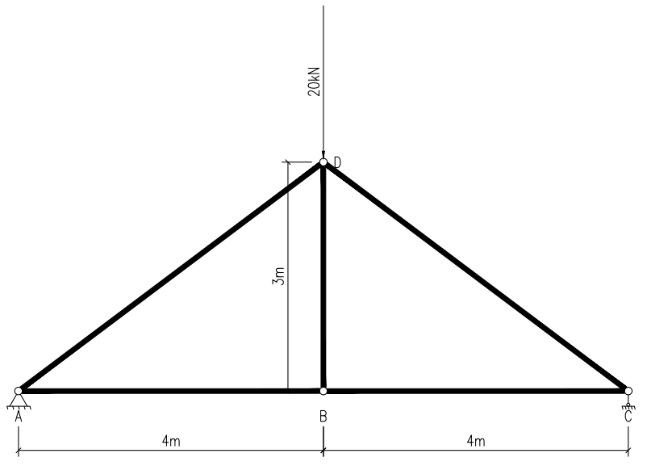
💡 查看答案
零杆：DB（中竖杆）
节点B处：杆AB和杆BC共线（水平），杆DB为第三杆（竖直），节点B无外力。
根据零杆判定规则3：无外力三杆节点，两杆共线，第三杆为零杆。
NDB = 0
基础题2：简单三角形桁架：节点A（左下铰支座）、B（右下滚轴支座）、C（顶部），AB=6m水平，C在AB中点正上方高4m；杆件AC、BC（斜杆），AB（下弦）；P=24kN竖直向下作用于C点。用节点法求各杆内力，并标明拉压性质。
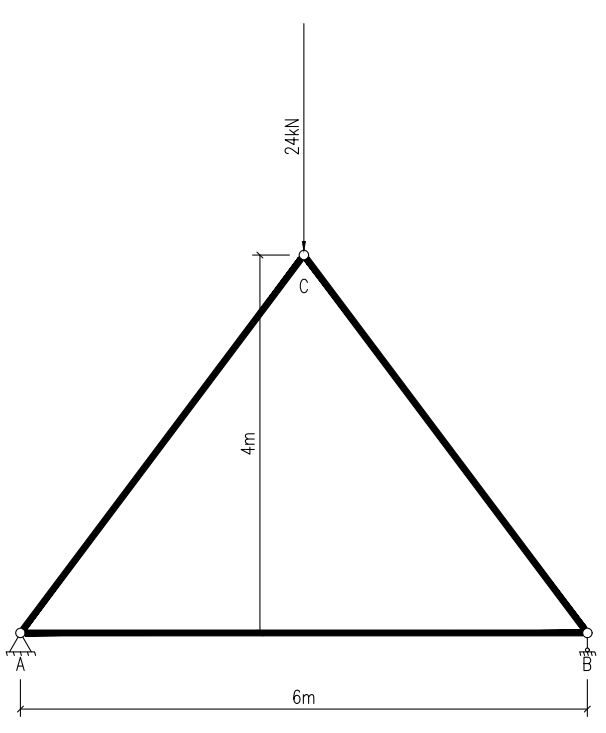
💡 查看答案
对称性：RA = RB = 12 kN ↑
节点A：sinα = 4/5，cosα = 3/5
∑Fy=0：12 + NAC×(4/5) = 0 → NAC = -15 kN（压）
∑Fx=0：NAB + (-15)×(3/5) = 0 → NAB = 9 kN（拉）
由对称性：NBC = -15 kN（压）
进阶题3：Warren桁架（平行弦桁架）：下弦A-B-C-D，间距均为3m（总跨度9m）；上弦E、F、G分别位于AB、BC、CD中点正上方，高4m；A铰支座，D滚轴支座；P₁=10kN(E)、P₂=20kN(F)、P₃=10kN(G)。用截面法求斜腹杆BF的内力。
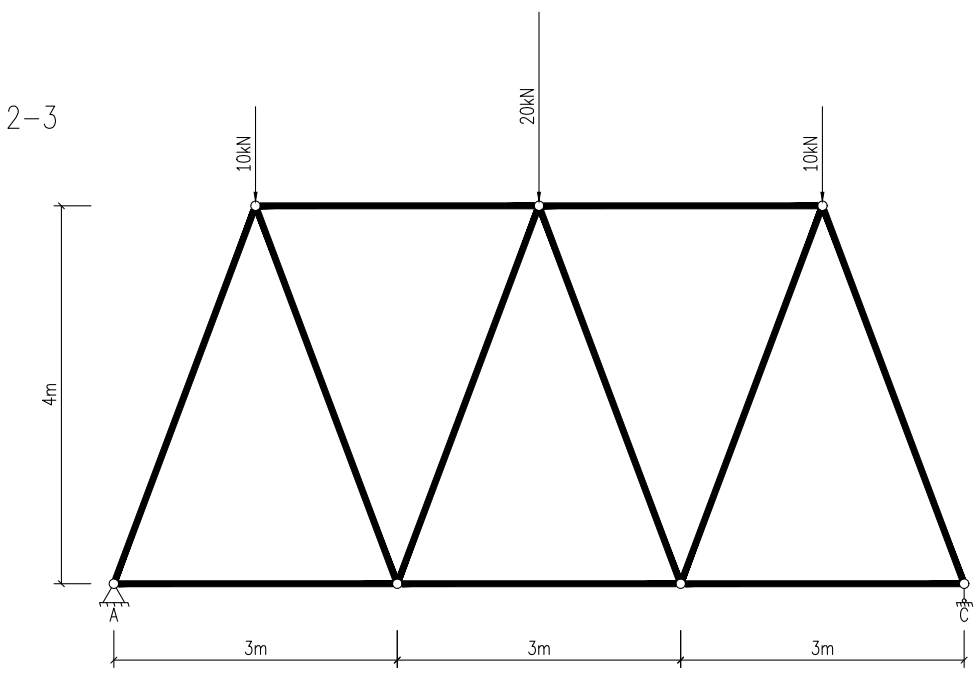
💡 查看答案
RA = RD = 20 kN（对称荷载）
截面I-I切断EF、BF、BC，取左半部分
∑Fy=0：20 - 10 + NBF×sinα = 0
sinα = 4/√(3²+4²) = 0.8
NBF = -12.5 kN（压）
挑战题4：矩形桁架：下弦A-B-C-D，上弦E-F-G-H（各段3m），高4m；竖杆AE、BF、CG、DH；斜腹杆EB、FC、GD（均从左上到右下）；A铰支座，D滚轴支座；仅在节点F作用竖直向下荷载P=36kN。(1)判断桁架中的零杆；(2)求杆FC的内力，标明拉压性质。
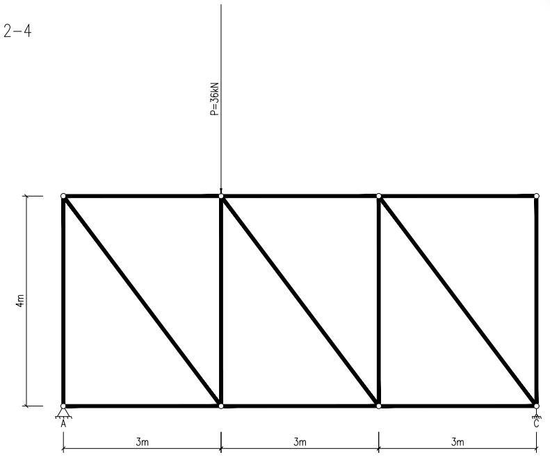
💡 查看答案
零杆：AE、CG、DH、EB、GD、AB、BC、CD（仅受载路径上的杆件有内力）
支座反力：RA=9kN，RD=27kN
取截面切断FC、BF、EF，对F取矩：
NFC = -27×9/4 ≈ -60.75 kN（压）
进阶题5：以下关于静定桁架的说法，哪些是正确的？（多选）
A. 静定桁架的所有杆件内力仅由平衡条件即可唯一确定
B. 桁架计算的基本假设包括：节点为理想铰接、荷载仅作用于节点、杆件自重忽略或等效到节点
C. 零杆在实际工程中没有任何作用，设计时可以删除
D. 截面法一次最多可以求解三个未知内力（平面问题）
E. 对于简单桁架，节点法可以从只有两个未知力的节点开始依次求解
💡 查看答案
正确答案：A、B、D、E
C错误：零杆仅在当前荷载工况下内力为零，不可随意删除。其他荷载工况下可能受力。
第3讲 结构位移计算
2026-09-27🔑 核心概念
- 虚功原理：外力虚功 = 内力虚功
- 单位荷载法：在所求位移方向加单位力
- 图乘法：用图形面积和形心竖距代替积分
- 互等定理：功的互等、位移互等、反力互等
- 弹性荷载法：将实际变形等效为荷载
❓ 关键问题
- 虚功原理的内容和适用条件？
- 单位荷载法怎么求指定截面位移？
- 图乘法的适用条件和步骤？
- 支座位移和温度变化怎么求位移？
- 互等定理有哪些？怎么应用？
一、虚功原理
外力虚功 = 内力虚功
ΣFi·δi = ∫(Mκ̄ + Nε̄ + Qγ̄)ds
| 方式 | 虚设 | 实际 | 用途 |
|---|---|---|---|
| 虚位移原理 | 虚位移 | 实际力 | 求未知力 |
| 虚力原理 | 虚力 | 实际位移 | 求未知位移 |
二、单位荷载法
ΔK = ∫M̄MP/(EI)ds + ∫N̄NP/(EA)ds + ∫kQ̄QP/(GA)ds
简化：梁和刚架可忽略轴向和剪切变形
Δ ≈ ∫M̄·MP/(EI) ds
三、图乘法
∫M̄MP/(EI) ds = ω·yC/(EI)
适用条件：
- 杆件为等截面直杆（EI=常数）
- 两个弯矩图中至少有一个是直线图形
- 面积ω和竖距yC在杆的同一侧时取正号
| 图形 | 面积 ω | 形心位置 |
|---|---|---|
| 三角形 | bh/2 | 距底端 b/3 |
| 二次抛物线（顶点在中点） | 2bh/3 | 中点 |
| 二次抛物线（顶点在端点） | bh/3 | 距顶点 b/4 |
四、支座位移引起的位移
ΔK = −ΣR̄k·ck
其中 R̄k 为单位虚力下第k个支座的反力
五、互等定理
| 定理 | 内容 |
|---|---|
| 功的互等 | WI→II = WII→I |
| 位移互等 | δ12 = δ21 |
| 反力互等 | r12 = r21 |
📝 总结
一句话：结构位移计算以虚功原理为基础，单位荷载法是核心方法，图乘法是实用工具。
📌 核心公式
单位荷载法：Δ = ∫M̄MP/(EI)ds
图乘法：Δ = ω·yC/(EI)
桁架位移：Δ = ΣN̄NPl/(EA)
支座位移：Δ = −ΣR̄k·ck
⚠️ 易错点
- 图乘法要求至少一个M图为直线
- 图乘正负号：同侧为正，异侧为负
- 抛物线形心位置别记错
- 支座位移公式有负号
- 桁架位移是求和不是积分
📝 练习题
基础题1：简支梁l=6m，跨中集中力P=30kN。用图乘法求跨中竖向位移。
💡 查看答案
MP图：三角形，Mmax=45kN·m
M̄图：三角形，ymax=1.5m
图乘：ΔC = 135×1.5/EI = 202.5/EI (↓)
核心题2：简支梁l=8m，满跨均布荷载q=15kN/m。求跨中竖向位移和A端转角。
💡 查看答案
MP图：抛物线，Mmax=120kN·m，面积ω=640
跨中位移：ΔC = 640×2/EI = 64mm (↓)
A端转角：θA = 640×0.5/EI = 0.016rad
考试热点题3：简支桁架（king-post式）：下弦A-B-C，AB=BC=6m；结点D在跨中B正上方高3m处；杆件AD、DC（斜上弦，长各3√5≈6.71m），AB、BC（下弦），BD（竖腹杆）；A铰支座，C滚轴支座；P=40kN竖直向下作用于D点。各杆EA=10⁵kN。求D点竖向位移。
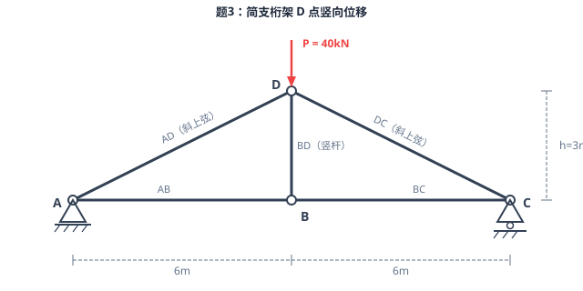
💡 查看答案
桁架位移公式：Δ = ΣN̄NPl/(EA)
NP：FA=FC=20kN；结点A：NAD=−20√5≈−44.7kN（压），NAB=+40kN（拉）；C侧对称；结点B两下弦共线无外力 → BD为零杆
N̄（D点P̄=1）：N̄AD=N̄CD=−√5/2，N̄AB=N̄CB=+1，N̄BD=0
求和 N̄NPl：斜杆 2×(√5/2)(20√5)(3√5)=300√5≈670.8；下弦 2×(1)(40)(6)=480；合计≈1150.8 kN·m
结果：ΔD = 1150.8/EA = 1150.8/10⁵ m ≈ 11.5mm (↓)
第4讲 力法
2026-09-18🔑 核心概念
- 超静定结构：未知力 > 平衡方程数
- 超静定次数：多余约束的个数
- 力法基本未知量：多余约束力
- 柔度系数 δ：单位力产生的位移
- 基本结构：去掉多余约束后的静定结构
❓ 关键问题
- 超静定次数怎么确定？
- 力法的基本思路？
- 力法方程怎么建立？
- 对称结构怎么简化？
一、超静定次数确定
n = 未知力数 - 独立平衡方程数
n = 3m - 2h - r （刚架公式）
约束换算：固定端=3，固定铰=2，可动铰=1
二、力法核心思路
超静定 → 静定 → 变形协调 → 求多余力
- 去掉多余约束，代以多余约束力 X
- 列变形协调方程
- 解方程求 X
- 叠加求最终内力
三、力法方程
一次超静定：δ₁₁X₁ + Δ₁ₚ = 0
n次超静定：[δ]{X} + {Δₚ} = {0}
各项含义：
- δᵢᵢ（主系数）：Xᵢ=1 作用下沿 Xᵢ 方向的位移，恒为正
- δᵢⱼ（副系数）：Xⱼ=1 作用下沿 Xᵢ 方向的位移，可正可负，δᵢⱼ=δⱼᵢ
- Δᵢₚ（自由项）：荷载作用下沿 Xᵢ 方向的位移
四、解题步骤
- 确定超静定次数，选基本未知量
- 确定基本结构（静定且几何不变）
- 建立力法方程
- 计算系数和自由项（画 M̄ᵢ 图和 Mₚ 图）
- 解方程求 X
- 叠加求内力：M = ΣM̄ᵢXᵢ + Mₚ
五、对称性利用（重要！）
| 荷载类型 | 结论 |
|---|---|
| 对称荷载 | 反对称多余力 = 0 |
| 反对称荷载 | 对称多余力 = 0 |
六、支座位移和温度变化
支座位移：方程右边 Δ₁ ≠ 0，代入实际位移
温度变化：自由项增加温度项 Δᵢₜ
📝 总结
一句话：力法以多余约束力为未知量，通过变形协调方程求解；选择合适的基本结构简化计算，对称结构优先用对称性减半。
📌 核心公式
δ₁₁X₁ + Δ₁ₚ = 0
M = M̄₁X₁ + Mₚ
⚠️ 易错点
- 基本结构必须静定，别去掉约束后还是超静定
- δᵢᵢ 恒为正，δᵢⱼ 可正可负
- 对称结构一定要利用对称性
- 叠加别漏 Mₚ
- 支座位移问题 Δ₁ ≠ 0
📝 练习题
基础题1：两跨连续梁ABC：A端固定铰，B端中间可动铰，C端可动铰。AB=BC=4m，AB跨均布荷载q=10kN/m。用力法求B支座反力。
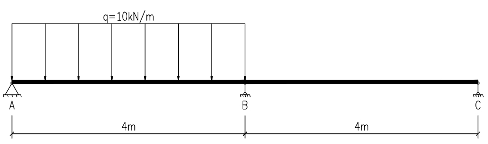
💡 查看答案
超静定次数：n=1
基本结构：去掉B支座，代以X₁↑
力法方程：δ₁₁X₁ + Δ₁ₚ = 0
系数计算：δ₁₁ = 8/(3EI)，Δ₁ₚ = -80/(3EI)
解：X₁ = 10 kN ↑
对称性题2：对称门式刚架，两立柱底部均为固定端，跨度L=6m，柱高H=4m，横梁均布荷载q=20kN/m。用力法求关键截面弯矩。
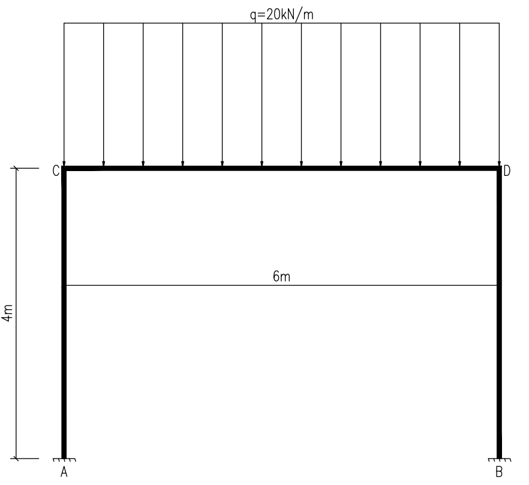
💡 查看答案
超静定次数：n=3（每个固定端3个约束）
对称性利用：对称结构+对称荷载→反对称多余力=0
关键弯矩：
· 横梁跨中：M = qL²/12 = 60 kN·m（下侧受拉）
· 柱顶：M = qL²/24 = 30 kN·m（内侧受拉）
· 柱底：M = qL²/24 = 30 kN·m（外侧受拉）
支座位移题3：一次超静定梁：A端固定，B端可动铰，跨度L=6m，B支座下沉Δ=10mm。用力法求B支座反力。
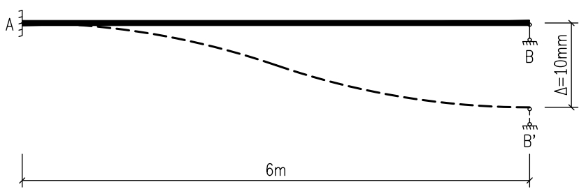
💡 查看答案
力法方程：δ₁₁X₁ + Δ₁ₚ = Δ_B（右边≠0！）
系数：δ₁₁ = L³/(3EI) = 72/EI，Δ₁ₚ = 0（无荷载）
解：X₁ = Δ/δ₁₁ = 10×10⁻³ × EI/72 = EI/7200 (kN)
方向向上，阻止下沉。
第5讲 位移法
2026-09-21🔑 核心概念
- 位移法基本未知量：结点角位移 + 独立线位移
- 转角位移方程：杆端弯矩与杆端位移关系
- 刚度系数 k：单位位移产生的杆端力
- 位移法方程：平衡方程
- 对称性利用：半结构法
❓ 关键问题
- 转角位移方程怎么写？
- 基本未知量怎么确定？
- 位移法方程怎么建立？
- 对称结构怎么简化？
- 力法 vs 位移法如何选择？
一、转角位移方程
两端固定梁：
MAB = 4iθA + 2iθB - 6iΔ/L
MBA = 2iθA + 4iθB - 6iΔ/L
一端固定一端铰支：
MAB = 3iθA - 3iΔ/L
线刚度 i = EI/L：杆件抗弯刚度除以杆长
二、基本未知量确定
| 未知量类型 | 确定方法 |
|---|---|
| 角位移 θ | 刚结点数（每个刚结点1个） |
| 线位移 Δ | 独立线位移数（铰接点简化法） |
三、位移法方程
结点平衡方程：ΣM结点 = 0
剪力平衡方程：ΣFx = 0 或 ΣFy = 0
方程形式：
- kii（主刚度系数）：单位位移δi=1产生的结点力
- kij（副刚度系数）：单位位移δj=1产生的结点力
- Ri（自由项）：荷载产生的结点力
四、解题步骤
- 确定基本未知量（角位移θ + 线位移Δ）
- 列转角位移方程，表达各杆端弯矩
- 建立平衡方程（结点平衡 + 剪力平衡）
- 解方程求位移未知量
- 代回转角位移方程求杆端弯矩
- 画内力图
五、对称性利用
| 荷载类型 | 变形特点 | 半结构取法 |
|---|---|---|
| 对称荷载 | 对称轴处无转角、无水平位移 | 对称轴处加定向支座 |
| 反对称荷载 | 对称轴处无竖向位移 | 对称轴处加可动铰支座 |
六、力法 vs 位移法
| 对比项 | 力法 | 位移法 |
|---|---|---|
| 基本未知量 | 多余约束力 | 结点位移 |
| 适用范围 | 超静定次数少 | 超静定次数多、刚架 |
| 方程类型 | 变形协调 | 平衡方程 |
| 系数含义 | 柔度系数δ | 刚度系数k |
📝 总结
一句话：位移法以结点位移为未知量，通过转角位移方程和平衡方程求解；刚架、超静定次数多时优先使用。
📌 核心公式
MAB = 4iθA + 2iθB - 6iΔ/L
i = EI/L
⚠️ 易错点
- 线位移数确定：用铰接法
- 转角位移方程符号：顺时针为正
- 对称结构取半结构时支座类型别搞错
- 杆端弯矩正负：对杆端顺时针为正
📝 练习题
基础题1：连续梁AB：A端固定，B端铰支，跨度L=6m，跨中集中力P=20kN。用位移法求B端弯矩。
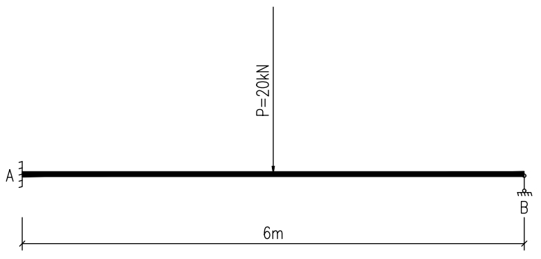
💡 查看答案
基本未知量：θA = 0（固定端无转角），故仅需1个未知量θB？不，A固定θA=0已知，B铰支θB未知。
转角位移方程：MBA = 3iθB（一端铰支）
固端弯矩：MABF = -PL/8 = -15 kN·m，MBAF = 0
平衡方程：MBA = 0 → θB = 0
最终：MB = 0（铰支端弯矩为零）
刚架题2：门式刚架：两柱固定端，横梁跨中集中力P=30kN，柱高H=4m，跨度L=6m，各杆EI相同。用位移法求柱顶弯矩。
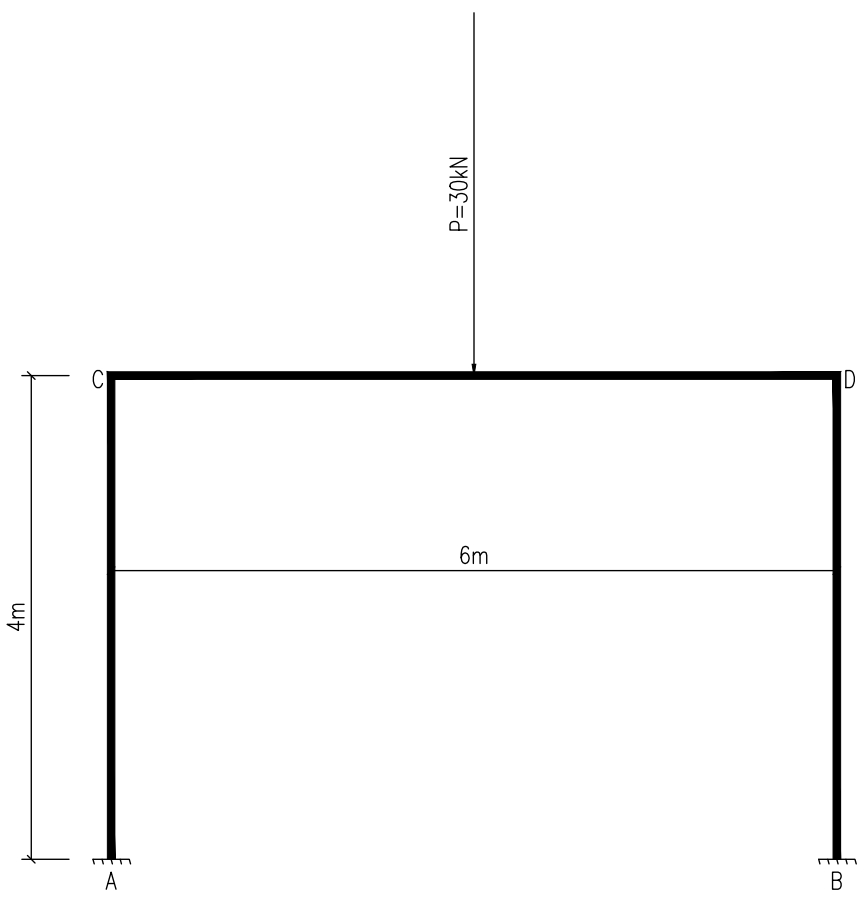
💡 查看答案
基本未知量：θ₁, θ₂, Δ（2角位移+1线位移=3个）
线刚度：i柱 = EI/4，i梁 = EI/6
对称性：结构对称、荷载对称 → θ₁ = -θ₂，Δ = 0
简化后：仅1个未知量θ₁
转角位移方程：
· M柱顶 = 4i柱θ₁
· M梁端 = 4i梁θ₁ - PL/8
平衡方程：2×4i柱θ₁ + 4i梁θ₁ = PL/8
解：θ₁ = PL/(8(8i柱+4i梁))
柱顶弯矩：M柱顶 = 4i柱θ₁ ≈ 12 kN·m（内侧受拉）
对称性题3：对称刚架受反对称荷载（左柱水平力P=20kN），柱高H=5m，跨度L=8m。利用对称性求基本未知量数目。
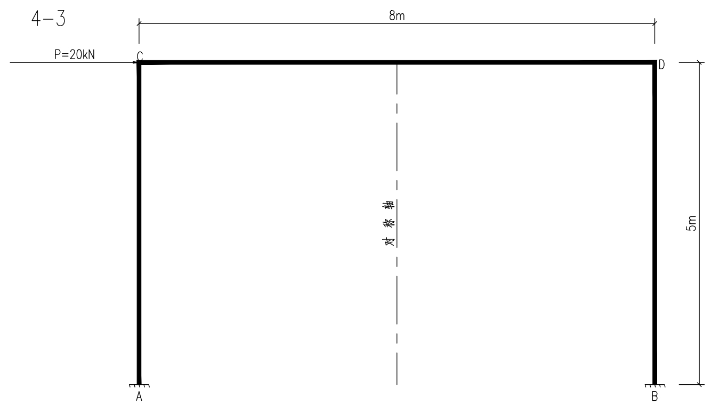
💡 查看答案
原结构未知量：θ₁, θ₂, Δ（3个）
对称性分析：
· 反对称荷载 → 对称轴处：无竖向位移，有转角和水平位移
· 半结构：对称轴处加竖向链杆（可动铰）
半结构未知量：θ' + Δ'（2个，减少1个）
结论：利用对称性，未知量从3减为2
第6讲 影响线
2026-09-24🔑 核心概念
- 影响线：单位移动荷载下某量值变化规律的图形
- 静力法：列平衡方程，x为变量
- 机动法：虚功原理，撤约束作位移图
- 最不利荷载：使某量达最大的荷载位置
- 临界荷载：使量值达极值的荷载
❓ 关键问题
- 影响线与内力图有什么区别？
- 静力法作影响线的步骤？
- 机动法的原理和步骤？
- 怎么确定最不利荷载位置？
- 绝对最大弯矩怎么求？
一、影响线的概念
定义：表示单位移动荷载（FP=1）作用下，某指定截面某量值变化规律的图形
| 比较项 | 内力图 | 影响线 |
|---|---|---|
| 荷载 | 固定荷载 | 单位移动荷载 |
| 横坐标 | 截面位置 | 荷载作用位置 |
| 纵坐标 | 该截面内力值 | 指定截面在荷载位于此位置时的内力值 |
| 用途 | 固定荷载下内力 | 移动荷载下最不利内力 |
二、静力法作影响线
基本思路：取隔离体，列平衡方程，将荷载位置 x 作为变量
简支梁支座反力
FRA = (l−x)/l (0≤x≤l)
FRB = x/l (0≤x≤l)
FRA：A点竖距1，B点竖距0的直线
FRB：A点竖距0，B点竖距1的直线
简支梁弯矩影响线（截面C，距A为a，距B为b）
MC = (b/l)·x 荷载在C左
MC = (a/l)·(l−x) 荷载在C右
图形：三角形，C点竖距 yC = ab/l
简支梁剪力影响线
FQC = −x/l 荷载在C左
FQC = (l−x)/l 荷载在C右
图形：两段平行线，C处有突变
三、机动法作影响线
理论基础：虚功原理
Z(x) = −δP(x) / δZ
步骤
- 撤去与Z相应的约束，代以未知力Z → 使体系成为有一个自由度的机构
- 令机构沿Z正方向发生单位虚位移 → 作荷载作用点的竖向位移图 δP
- 位移图即为影响线形状，δZ以上为正，以下为负
| 方法 | 原理 | 特点 |
|---|---|---|
| 静力法 | 平衡方程 | 精确，可求数值 |
| 机动法 | 虚功原理 | 快速定性，适合判断最不利位置 |
四、影响线的应用
单个集中荷载
最不利位置：荷载作用在影响线竖距最大处
Zmax = FP · ymax
一组集中荷载
一般原则：把数量大、排列密的荷载放在影响线竖距较大的部位
临界荷载判别式
ΣFR左/a > ΣFR右/b 且 (ΣFR左−FPcr)/a < (ΣFR右+FPcr)/b
（或反之）
五、绝对最大弯矩与包络图
绝对最大弯矩
移动荷载下梁内可能出现的弯矩最大值
- 必定发生在某一集中荷载作用点
- 使该荷载与合力关于梁中点对称
- 逐个荷载试算，取最大值
包络图
各截面内力最大值连成的图形（弯矩包络图 + 剪力包络图）
📝 总结
一句话：影响线是研究移动荷载的工具，静力法列方程求精确值，机动法用虚功快速定性；利用影响线可确定最不利荷载位置和绝对最大弯矩。
⚠️ 易错点
- 影响线横坐标是荷载位置，不是截面位置
- 剪力影响线在截面处有突变，别画成连续线
- 结点荷载下影响线在结点间是直线，不是曲线
- 临界荷载判别式要分清左右段，别搞反不等号方向
- 绝对最大弯矩不一定在梁中点，要在某荷载作用点
📝 练习题
基础题1：简支梁AB，跨度l=10m。求支座反力FRA和FRB的影响线方程，并求当FP=20kN作用在距A端3m处时，FRA和FRB的值。
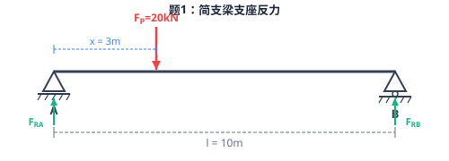
💡 查看答案
FRA = (10−x)/10，FRB = x/10
当 x=3m：FRA = 20×7/10 = 14kN，FRB = 20×3/10 = 6kN
验算：14+6=20kN ✅
核心题2：简支梁AB，跨度l=12m，截面C距A端a=4m。(1)作MC影响线，求顶点竖距；(2)当均布荷载q=10kN/m可任意布置时，求MC最大值。
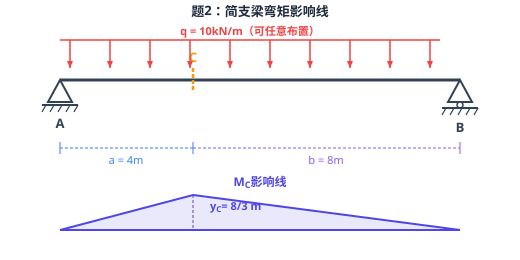
💡 查看答案
b = 12−4 = 8m
(1) yC = ab/l = 4×8/12 = 8/3 ≈ 2.67m
(2) 荷载布满全跨（全正号区），面积 ω = ½×12×8/3 = 16m²
MC,max = q×ω = 10×16 = 160 kN·m
方法转换题3：用机动法作简支梁（l=8m）跨中截面C的弯矩MC和剪力FQC的影响线。
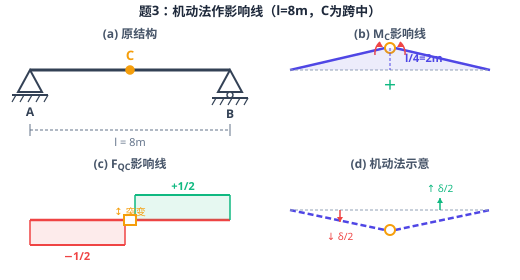
💡 查看答案
MC影响线：撤去C处抗弯约束→加铰，令铰两侧产生单位相对转角。影响线为三角形，C点竖距 = l/4 = 2m，全在基线上方。
FQC影响线：撤去C处抗剪约束→加定向滑动支座，令两侧产生单位相对竖向位移。左段 −½，右段 +½，C处有突变。
考试热点题4：简支梁跨度l=16m，截面K距A端6m。MK影响线三角形，K点竖距3.75m。集中荷载组：FP1=30kN，FP2=50kN，FP3=30kN，间距3m和4m。求MK最大值。
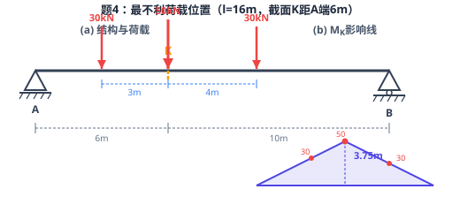
💡 查看答案
FP2在K点时：
FP1对应竖距 y₁ = 3.75−3×0.625 = 1.875m
FP3对应竖距 y₃ = 3.75−4×0.375 = 2.25m
MK = 30×1.875 + 50×3.75 + 30×2.25 = 56.25+187.5+67.5 = 311.25 kN·m
桥梁思维题5：简支梁桥l=20m。公路-I级：qk=10.5kN/m，Pk=240kN。(1)作跨中弯矩影响线；(2)求车道荷载下跨中最大弯矩。
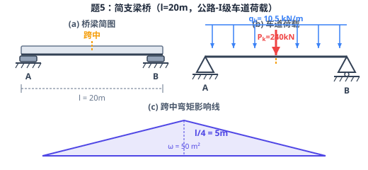
💡 查看答案
(1) 跨中弯矩影响线：三角形，ymax = l/4 = 5m
(2) 面积 ω = ½×20×5 = 50m²
Mmax = Pk×ymax + qk×ω = 240×5 + 10.5×50 = 1200+525 = 1725 kN·m
第7讲 力矩分配法
2026-09-27🔑 核心概念
- 转动刚度 S：使杆端产生单位转角所需力矩
- 分配系数 μ：分配力矩占总不平衡力矩比例
- 传递系数 C：远端弯矩与近端弯矩之比
- 固端弯矩：荷载引起的杆端弯矩
- 不平衡力矩：结点处各杆固端弯矩之和
❓ 关键问题
- 转动刚度、分配系数、传递系数怎么算？
- 力矩分配法的基本步骤？
- 多结点力矩分配怎么操作？
- 力矩分配法与位移法有什么关系？
- 无侧移刚架怎么用力矩分配法？
一、三个核心参数
| 远端支承 | 转动刚度 S | 传递系数 C |
|---|---|---|
| 固定端 | 4i | 1/2 |
| 铰支端 | 3i | 0 |
| 定向滑动 | i | −1 |
| 自由端 | 0 | − |
线刚度：i = EI/l
二、分配系数
μij = Sij / ΣSik
性质：同一结点各杆分配系数之和 = 1
三、力矩分配法步骤
- 锁定：锁住所有刚结点，计算固端弯矩 MF
- 放松：选一个不平衡力矩最大的结点放松
- 分配：将 −M不平衡 按分配系数分配给各杆
- 传递：分配弯矩向远端传递（乘传递系数）
- 迭代：轮流放松各结点，反复迭代直到收敛
- 叠加：最终弯矩 = 固端 + 各轮分配 + 各轮传递
四、力矩分配法 vs 位移法
| 比较项 | 力矩分配法 | 位移法 |
|---|---|---|
| 本质 | 迭代法（渐近） | 精确法（解方程） |
| 未知量 | 不直接求位移 | 求结点位移 |
| 适用 | 连续梁、无侧移刚架 | 所有结构 |
| 手算优势 | 过程规范，易校核 | 需解方程组 |
关系：力矩分配法是位移法的迭代版本
五、多结点力矩分配
核心策略：逐次放松，交替进行
加速收敛技巧：
- 从不平衡力矩最大的结点开始
- 对称结构可取半结构
📝 总结
一句话：力矩分配法是位移法的迭代版本，通过"锁定→放松→分配→传递"的循环逐次逼近精确解。
📌 核心公式
S固定=4i, S铰支=3i, S滑动=i
C固定=1/2, C铰支=0, C滑动=−1
μij = Sij/ΣSik
⚠️ 易错点
- 分配系数之和必须 = 1
- 放松时分配的是 −不平衡力矩（负号！）
- 相邻结点不能同时放松
- 多结点要轮流放松
📝 练习题
基础题1：连续梁AB，A固定B铰支，l=6m，AB段受均布荷载q=12kN/m。求分配系数和杆端弯矩。
💡 查看答案
分配系数：μBA=4/7，μBC=3/7
固端弯矩：MBAF=36kN·m
最终：MBA=15.43kN·m，MAB=−46.29kN·m
重点题2：三跨连续梁ABCD，各跨l=6m，AB和CD段受q=10kN/m。用力矩分配法求杆端弯矩。
💡 查看答案
结果（对称）：
MAB=−40, MBA=10, MBC=−10
MCB=10, MCD=−10, MDC=40
验算：各结点弯矩和为0 ✅
考试热点题3：无侧移门式刚架：柱AB、DC与横梁BC刚接于B、C结点，柱底A、D固定端；梁跨度 l = 8m，柱高 h = 4m，各杆 EI 相同。横梁BC满跨受均布荷载 q = 20kN/m（竖向向下）。用力矩分配法求杆端弯矩。
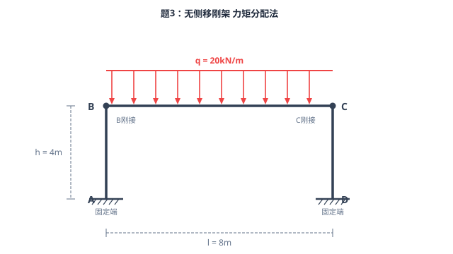
💡 查看答案
利用对称性：θC=−θB
分配系数：μBA=2/3，μBC=1/3
最终：MBA=53.33, MBC=−53.33
混凝土第1讲 材料性能与设计原则
2026-10-14🔑 核心概念
- 材料强度设计值：fc/ft、钢筋 fsy
- 等效矩形应力图：α1、β1，以C50为界
- 界限受压区高度 ξb：防超筋
- 最小配筋率 ρmin：防少筋，"开裂即破坏"
- 设计表达式：γ0 与 γRE 不同时考虑
❓ 关键问题
- fc、ft、fsy 去哪张表查？
- α1/β1 什么时候不是 1.0/0.80？
- ξb 公式里 εcu 怎么取？
- ρmin 的底面积用 bh 还是 bh0？T形怎么扣？
- γ0 乘在哪边？γRE 除在哪边？
一、材料强度设计值
混凝土：fc（轴心抗压）、ft（轴心抗拉）——《混规》表4.1.3-1，按强度等级查
钢筋 fsy：HPB300=270，HRB335=300，HRB400=360，HRB500=435 N/mm²
二、等效矩形应力图（《混规》6.2.6条）
应力图宽度（峰值）= α1·fc；受压区高度 x = β1·xn
| 混凝土等级 | α1 | β1 |
|---|---|---|
| ≤C50 | 1.0 | 0.80 |
| C80 | 0.94 | 0.74 |
| C50~C80 | 线性内插 | |
"等效"含义：合力大小相等 + 合力作用位置相同
三、基本方程与界限条件
ΣN=0：α1·fc·b·x = fy·As
ΣM=0：M ≤ α1·fc·b·x·(h0 − x/2)
ξb = β1 / (1 + fsy/(Es·εcu))；εcu：≤C50 取 0.0033，C80 取 0.0030
适用条件：x ≤ ξb·h0（防超筋）；As ≥ ρmin·b·h（防少筋）
四、配筋率与最小配筋率（《混规》8.5节）
计算承载力时：ρ = As / (b·h0) ｜ 配筋率校核时：ρmin 底面积 = b·h（全截面）
受弯非抗震：ρmin = max(0.2%, 45ft/fy)
T形/工字形（表8.5.1注5）：底面积 = 全截面 − (bf′−b)·hf′
概念依据："开裂即破坏"——开裂前保护层混凝土也参与受拉，故用全截面 bh
五、设计表达式（非抗震 vs 抗震）
非抗震：γ0·S ≤ R （γ0：一级1.1 / 二级1.0 / 三级0.9，《混规》3.3.2条）
抗震：S ≤ R / γRE
| 构件状态 | γRE |
|---|---|
| 受弯 | 0.75 |
| 偏压 ξn≤0.15 / ξn>0.15 | 0.75 / 0.80 |
| 轴拉、受剪 | 0.85 |
| 局部受压 | 1.0 |
（混规表11.1.6）
📝 总结
一句话：本讲是混规"第0章"——查表得强度（fc/fy），应力图化矩形（α1/β1），两个平衡方程配钢筋（x≤ξb·h0 防超筋，As≥ρmin·bh 防少筋），最后套对设计表达式（非抗震γ0乘作用，抗震γRE除承载）。
⚠️ 易错点
- ρmin 校核用 bh，承载力计算用 bh0，两套配筋率别混
- γ0 与 γRE 不同时考虑
- α1/β1 与 εcu 都以 C50 为界，C50~C80 线性内插
- T形 ρmin 底面积要扣受压翼缘 (bf′−b)·hf′
📝 练习题（5道）
基础题1（概念）：关于等效矩形应力图系数 α1、β1，混凝土强度等级 ≤C50 时应取：
💡 查看答案
答案：B
≤C50 取 α1=1.0、β1=0.80；C80 取 0.94/0.74；C50~C80 之间线性内插。
基础题2：矩形截面梁 b×h=250mm×500mm，混凝土C30（ft=1.43N/mm²），HRB400 纵筋（fy=360N/mm²），非抗震。求受拉钢筋最小配筋面积 As,min。
💡 查看答案
答案：B
ρmin = max(0.2%, 45ft/fy) = max(0.2%, 45×1.43/360=0.179%) = 0.2%
As,min = 0.2% × b × h = 0.2% × 250 × 500 = 250mm²（注意底面积用全截面 bh）
进阶题3： T形梁 bf′=1100mm，hf′=120mm，b=250mm，h=650mm，C30，HRB400，非抗震受弯。求一侧受拉钢筋最小配筋面积。
💡 查看答案
答案：C
底面积 = 全截面 − (bf′−b)·hf′ = 1100×120 + 250×530 − (1100−250)×120 = 205000mm²
ρmin = max(0.2%, 0.179%) = 0.2% → As,min = 0.2% × 205000 = 410mm²
基础题4（概念）：某安全等级为二级的非抗震构件，其结构重要性系数 γ0 应取：
💡 查看答案
答案：D
《混规》3.3.2：一级 γ0≥1.1，二级 γ0=1.0，三级 0.9。二级安全等级取 1.0。
⚠️ 笔记原标答"1.1/C"有误，已修正——记牢：1.1/1.0/0.9 对应 一/二/三级。
进阶题5：抗震框架梁支座截面剪力组合设计值 V=250kN，承载力抗震调整系数 γRE=0.85。问非抗震受剪承载力设计值 Rd 至少应满足多少？
💡 查看答案
答案：A
抗震表达式 S ≤ R/γRE，两边乘 γRE 等价于 γRE·S ≤ R（地震为稀有事件，可靠度指标要求低于非抗震，γRE 是作用效应的折减）。
Rd ≥ γRE·V = 0.85 × 250 = 212.5kN
⚠️ 移项方向是最易错点：需的是 γRE·V（212.5），不是 V/γRE（294）。笔记原答案"265kN/C"为移项错误，已修正。
混凝土第2讲 受弯构件正截面承载力
2026-10-16🔑 核心概念
- 单筋矩形两套流程：已知M求As / 已知As求Mu
- 双筋截面：x>ξb·h0 且截面不能放大时引入 As′
- x<2a′ 处理：《混规》6.2.14，对受压筋取矩
- T形两类判别：中和轴在翼缘内=第一类
- 翼缘计算宽度 bf′：《混规》表5.2.4 取最小值
❓ 关键问题
- 配筋式 x 的求法和复核式差在哪？
- 受压钢筋充分利用的前提条件是什么？
- x<2a′ 时公式里为什么出现 h−as−as′？
- 配筋计算和截面复核的判别式各用哪个？
- bf′ 按哪三个因素确定？
一、单筋矩形截面：两类计算流程
配筋计算（已知M求As）：
x = h0 − √[h0² − 2γ0M/(α1·fc·b)]，要求 x ≤ ξb·h0
As = α1·fc·b·x / fy，再校核 As ≥ ρmin·b·h
截面复核（已知As求Mu）：
x = fy·As/(α1·fc·b)；x>ξb·h0 时取 x=ξb·h0
Mu = α1·fc·b·x·(h0 − x/2)，验算 γ0·M ≤ Mu
二、双筋矩形截面（《混规》6.2.10）
ΣN=0：α1·fc·b·x + fy′·As′ = fy·As
ΣM=0：γ0·M ≤ α1·fc·b·x·(h0−x/2) + fy′·As′·(h0−as′)
适用前提：x ≤ ξb·h0 且 x ≥ 2a′（保证受压筋屈服、应力取 fy′）
配筋流程：M1 = γ0M − fy′As′(h0−as′) → 用 M1 按单筋求 x → As = (α1·fc·b·x + fy′·As′)/fy
三、x<2a′ 的处理（《混规》6.2.14）
x<2a′ → 受压筋应变小、不屈服 → 近似取 x=2a′，弯矩对受压筋合力点取矩：
配筋：As = γ0M / [fy·(h − as − as′)]
复核：Mu = fy·As·(h − as − as′)（抗震再除 γRE）
四、T形截面两类判别与计算（《混规》6.2.11）
判别：中和轴在翼缘内（x ≤ hf′）= 第一类，按宽 bf′ 的矩形算；中和轴入肋（x>hf′）= 第二类
配筋式判别：α1·fc·bf′·hf′·(h0−hf′/2) ≥ γ0M → 第一类
复核式判别：α1·fc·bf′·hf′ ≥ fy·As → 第一类
第二类配筋：M1 = α1·fc·(bf′−b)·hf′·(h0−hf′/2)；x = h0 − √[h0² − 2(γ0M−M1)/(α1·fc·b)]
As = α1·fc·[b·x + (bf′−b)·hf′] / fy
箱形、工字形、槽形、倒L形均可等效为T形处理
五、翼缘计算宽度 bf′（《混规》表5.2.4）
三因素控制，取最小值：①计算跨度 l0：肋形梁 l0/3，倒L形肋形梁 l0/6；②梁肋净距 sn：b+sn（肋形）、b+sn/2（倒L）；③翼缘高度 hf′/h0：≥0.1 时 b+12hf′；0.05~0.1 时肋形 b+12hf′/独立梁 b+6hf′；<0.05 时肋形 b+12hf′/独立 b+5hf′
影响翼缘有效性的本质：离肋越远的翼缘参与受力越差（剪滞）
📝 总结
一句话：正截面承载力全是"两个平衡方程+适用条件"的变体——单筋是母版（x≤ξb·h0、As≥ρmin·bh）；双筋加一项 fy′As′(h0−as′)，x≥2a′ 才计受压筋，否则对受压筋取矩；T形先判类型，第一类当 bf′ 宽的矩形，第二类从弯矩里先扣掉翼缘挑出部分 (bf′−b)hf′，bf′ 查表5.2.4取最小。
⚠️ 易错点
- 配筋式与复核式的 T形判别式不同（一个带 h0−hf′/2，一个不带）
- x<2a′ 用 h−as−as′ 力臂，不是 h0−as′
- 抗震端截面 x≤0.25/0.35h0 是延性要求，比 ξb 严
- bf′ 三种情况取最小值，不是最大值
📝 练习题（5道）
基础题1（概念）：T形截面受弯构件，"已知受拉钢筋 As 复核承载力 Mu"时，第一/第二类T形截面的判别式是：
💡 查看答案
答案：B
复核式用合力比较：α1·fc·bf′·hf′ ≥ fy·As → 中和轴在翼缘内，第一类；A 是配筋计算式的判别形式。
进阶题2：矩形梁 b×h=250mm×550mm，C30（fc=14.3N/mm²），HRB400（fy=360N/mm²），as=50mm，非抗震 γ0=1.0，弯矩设计值 M=150kN·m。求所需受拉钢筋面积 As。
💡 查看答案
答案：B
h0=500mm。2γ0M/(α1·fc·b) = 2×150×10⁶/(14.3×250) = 83,916mm²
x = 500 − √(250000 − 83916) = 500 − 407.5 = 92.5mm ≤ ξb·h0 = 0.518×500 = 259mm ✓
As = α1·fc·b·x/fy = 14.3×250×92.5/360 = 918mm²
校核：ρmin·b·h = 0.2%×250×550 = 275mm² < 918mm² ✓
进阶题3：T形梁 bf′=600mm，hf′=120mm，b=250mm，h=700mm（as=60mm），C30，HRB400，非抗震，M=500kN·m。判断类型并求 As。
💡 查看答案
答案：A
h0=640mm。α1·fc·bf′·hf′·(h0−hf′/2) = 14.3×600×120×580 = 597kN·m > 500kN·m → 第一类，按 600mm 宽矩形。
x = 640 − √(640² − 2×500×10⁶/(14.3×600)) = 640 − √(409600−116550) = 640 − 541.3 = 98.7mm（≤hf′=120 ✓）
As = 14.3×600×98.7/360 = 2353mm²
基础题4（概念）：双筋矩形截面计算中，不满足 x≥2a′ 时按《混规》6.2.14条处理，其近似做法是：
💡 查看答案
答案：B
x<2a′ 时受压筋应力达不到 fy′，近似取 x=2a′、受压区合力与受压筋合力重合，对受压筋合力点取矩：As = γ0M/[fy·(h−as−as′)]。
考试热点题5：抗震框架梁矩形截面 b×h=250mm×550mm（as=50mm），C30，HRB400，受拉钢筋 As=1520mm²（4Φ22）。求该支座截面考虑抗震的正截面受弯承载力设计值 Mu（γRE=0.75）。
💡 查看答案
答案：B
x = fy·As/(α1·fc·b) = 360×1520/(14.3×250) = 153.1mm ≤ ξb·h0 = 259mm ✓
M非 = 14.3×250×153.1×(500−76.6) = 231.7kN·m
抗震：Mu = M非/γRE = 231.7/0.75 = 309kN·m
⚠️ A（232）是没除 γRE 的陷阱值。
混凝土第3讲 受弯构件斜截面承载力
2026-10-16🔑 核心概念
- 三种斜截面破坏：斜压/剪压/斜拉
- 截面限制条件：6.3.1 防斜压（上限值）
- 受剪承载力公式：6.3.4，αcv 两种取值
- 最小配箍率：0.24ft/fyv，防斜拉
- 弯起钢筋/板类/箱形：0.8fyAsb·sinαs 等专题
❓ 关键问题
- 三种破坏各靠什么措施控制？
- hw/b 在 4~6 之间怎么处理？
- 什么时候 αcv=0.7，什么时候 1.75/(λ+1)？
- 什么条件下可不计算、只按构造配箍？
- fyv 超过 360 怎么处理？
一、斜截面三种破坏形态
斜压破坏：剪跨比小/腹板薄，混凝土被斜向压碎 → 用截面限制条件（上限值）控制
剪压破坏：适中配箍，斜裂缝延伸到剪压区 → 计算公式的模型基础
斜拉破坏：无箍/箍筋过少，一裂即断 → 用最小配箍率+构造控制
二、截面限制条件（《混规》6.3.1）
| hw/b | V ≤ |
|---|---|
| ≤4 | 0.25·βc·fc·b·h0 |
| 4~6 | 线性内插 |
| ≥6 | 0.20·βc·fc·b·h0 |
βc：混凝土强度影响系数，≤C50 取 1.0，C80 取 0.8，中间线性内插
不满足 → 加箍筋没用，只能加大截面或提高混凝土等级
三、受剪承载力基本公式（《混规》6.3.4）
V ≤ Vcs = αcv·ft·b·h0 + fyv·(Asv/s)·h0 （Asv = n·Asv1，同截面各肢合计）
αcv：一般受弯构件取 0.7；集中荷载（对支座剪力占比≥75%）作用的独立梁取 1.75/(λ+1)，λ=a/h0，<1.5 取 1.5、>3 取 3
独立梁＝不与楼板整体浇筑的梁（如吊车梁）
fyv>360N/mm² 时取 360（受剪/受扭/受冲切计算，《混规》4.2.3）
四、配箍计算流程与构造界限
① 定 αcv → ② 判 V ≤ αcv·ft·b·h0 + 0.05Np0？满足则仅按 9.2.9 构造配箍 → ③ Asv/s ≥ (V − αcv·ft·b·h0)/(fyv·h0)
④ 选肢数 n 与间距 s：nAsv1/(b·s) ≥ ρsv,min = 0.24·ft/fyv
⑤ 校核截面限制条件（6.3.1）
五、弯起钢筋、板类与异形截面
箍筋+弯起筋（6.3.5）：V ≤ Vcs + Vp + 0.8·fy·Asb·sinαs（系数 0.8：斜裂缝处弯起筋应力达不到 fy）
计算第一排弯起筋取支座边缘剪力；后一排取前一排弯起点处剪力（6.3.6）
不配箍筋的一般板类（6.3.3）：V ≤ 0.7·βh·ft·b·h0，βh=(800/h0)^{1/4}，h0<800 取 800、h0>2000 取 2000
箱形截面：按矩形流程，取 b = 2tw（一侧壁厚）
📝 总结
一句话：斜截面=三道防线——先卡上限（0.25βc·fc·b·h0 防斜压），再算 Vcs=αcv·ft·bh0+fyv·(Asv/s)·h0（剪压模型），最后兜底最小配箍率 0.24ft/fyv（防斜拉）；αcv 记住 0.7 与 1.75/(λ+1) 两条线，弯起筋贡献乘 0.8sinα。
⚠️ 易错点
- λ 的 1.5~3.0 限值要查
- fyv 上限 360 只限承载力计算，体积配箍率不受限
- 截面限制不满足时加箍筋无效
- 板类受剪公式不带箍筋项、带 βh
📝 练习题（5道）
基础题1（概念）：斜截面受剪承载力计算中，"截面限制条件（上限值）"旨在防止：
💡 查看答案
答案：C
上限值 0.25βc·fc·b·h0 控制斜压破坏；斜拉靠最小配箍率与构造；剪压是计算模型本身。
基础题2（概念）：集中荷载作用下独立梁（集中荷载对支座产生的剪力占总剪力 80%），剪跨比 λ=a/h0=2.0，αcv 应取：
💡 查看答案
答案：B
αcv = 1.75/(λ+1) = 1.75/3 = 0.583。λ 在 1.5~3.0 之间，直接采用。
进阶题3：矩形梁 b×h=250mm×500mm（as=40mm），C30（ft=1.43N/mm²），箍筋 HPB300（fyv=270N/mm²），一般受弯构件（αcv=0.7），剪力设计值 V=180kN。若采用双肢Φ8（Asv=100.5mm²），最大允许间距 s 与下列何值最接近？
💡 查看答案
答案：B
h0=460mm。混凝土项 = 0.7×1.43×250×460 = 115.2kN
Asv/s ≥ (180−115.2)×10³/(270×460) = 0.522mm²/mm → s ≤ 100.5/0.522 = 192mm，取 190mm
校核：ρsv = 100.5/(250×190) = 0.212% ≥ 0.24ft/fyv = 0.127% ✓；截面 0.25×1.0×14.3×250×460 = 411kN > 180kN ✓
进阶题4（概念+计算）：梁 b×h0=250mm×640mm，C40（fc=19.1N/mm²，βc=1.0），hw/b=2.6，剪力设计值 V=900kN。问：能否通过加大箍筋满足受剪要求？
💡 查看答案
答案：B
上限值 = 0.25×1.0×19.1×250×640 = 764kN < 900kN。截面限制条件不满足时腹板先被斜压破坏，任何箍筋/弯起筋都无济于事——只能加大截面或提高混凝土等级。
考试热点题5：不配箍筋的简支板类受弯构件，b=1000mm，h0=180mm，C30（ft=1.43N/mm²）。其斜截面受剪承载力设计值与下列何值最接近？
💡 查看答案
答案：B
《混规》6.3.3：βh=(800/h0)^{1/4}，h0<800 按 800 取 → βh=1.0
V ≤ 0.7×1.0×1.43×1000×180 = 180.6kN ≈ 181kN
混凝土第4讲 受压构件承载力（轴压+偏压）
2026-10-21🔑 核心概念
- 轴压 6.2.15：N ≤ 0.9φ(fcA+f′yA′s)，φ 稳定系数
- 螺旋箍 6.2.16：2αfyvAss0 约束项，上限 1.5Nl
- 计算长度 l0：现浇框架底层 1.0H、其余 1.25H
- 大小偏压：对称配筋 x=γ0N/(α1fcb) 比 ξbh0
- 柱斜截面 6.3.12：λ=M/(Vh0)，+0.07N 有利项
❓ 关键问题
- φ 和 0.9 各管什么？
- 什么条件才允许按螺旋箍公式？
- 框架柱 l0 怎么取？
- 小偏压为何要验算背面？
- +0.07N 与抗震 −0.2N 区别？
一、轴压正截面（6.2.15）
N ≤ 0.9φ(fc·A + f′y·A′s)。0.9：可靠度调整；φ 查表 6.2.15，按 l0/b（方）、l0/d（圆）、l0/i 确定，l0/b≤8 时 φ=1.0
轴压用 HRB500/HRBF500：f′y 取 400N/mm²（4.2.3，压碎控制时高强筋用不满）
二、螺旋箍柱（6.2.16）
N ≤ 0.9(fc·Acor + f′y·A′s + 2α·fyv·Ass0)，Ass0=π·dcor·As′1/s，α=1.0，dcor=d−2c−2d螺旋
采用条件（缺一按普通箍）：l0/d ≤ 12；40 ≤ s ≤ min(80, dcor/5)；Ass0 ≥ 0.25A′s
且 普通箍 Nl ≤ N ≤ 1.5Nl（约束收益封顶）；此处 fyv 无 360 上限
三、柱计算长度 l0（6.2.20）
多层框架：现浇楼盖 底层 1.0H、其余 1.25H；装配式 1.25H / 1.5H
单层排架（刚性屋盖）：无吊车单跨 1.5H、多跨 1.25H；上下端有支点轴压构件 l0=1.1l
四、偏压判别与对称配筋（6.2.17）
e0=M/N，ea=max(20, h/30)，ei=e0+ea；先按 6.2.4（附录B）判断二阶效应是否放大 M
对称配筋：x = γ0N/(α1·fc·b)（抗震用 γRE·N）；x≤ξbh0 大偏压，否则小偏压（6.2.17-8 重算 ξ，σs<fy）
大偏压 x≥2a′：As=A′s=[Ne−α1fc·bx(h0−x/2)]/[f′y(h0−a′s)]，e=ei+h/2−as；x<2a′ 用 6.2.14 对 A′s 取矩
小偏压且 N>fc·bh 时，另按 6.2.17-9 验算 A′s 一侧（防背面先压碎）
五、柱斜截面（6.3.12）与 γRE
V ≤ [1.75/(λ+1)]ft·b·h0 + fyv(Asv/s)h0 + 0.07N；λ=M/(Vh0)，反弯点在层高内取 Hn/(2h0)，限 1.0~3.0；均布 1.5、集中(≥75%) a/h0
N>0.3fc·A 取 0.3fc·A；V ≤ 混凝土项+0.07N 时仅构造配箍（6.3.13）
正截面 γRE（11.1.6）：N/(fcA)<0.15 → 0.75；≥0.15 → 0.80
📝 总结
一句话：轴压看 φ 和 0.9，螺旋箍三重门槛+1.5Nl 封顶；偏压先算 ei 再判大小——对称配筋 x=γ0N/(α1fcb) 比 ξbh0，大偏压套 6.2.17、小偏压重算 ξ 并防背面；柱受剪记 λ 两种算法和 +0.07N（0.3fcA 封顶）。
⚠️ 易错点
- φ 查表用边长/直径不是 h0
- 螺旋箍 1.5Nl 上限漏用
- x<2a′ 要改 6.2.14
- γRE 按轴压比分档（0.15 界限）
📝 练习题（5道）
基础题1（概念）：轴压公式中稳定系数 φ 是为了考虑：
💡 查看答案
答案：B
长柱先失稳，φ 即此折减；0.9 才是可靠度调整。
进阶题2：轴压柱 400×400，C30（fc=14.3），A′s=1520mm²，HRB400（f′y=360），l0=3.0m（l0/b=7.5，φ=1.0）。承载力设计值最接近：
💡 查看答案
答案：B
N ≤ 0.9×1.0×(14.3×160000+360×1520) = 0.9×2835.2kN = 2552kN；C 是漏乘 0.9。
进阶题3：对称配筋偏压柱 400×600（as=a′s=45），C30，HRB400，N=1000kN，M=250kNm（免二阶放大）。每侧配筋最接近：
💡 查看答案
答案：B
e0=250，ea=20，ei=270；x=1000×10³/(14.3×400)=174.8 ≤ ξbh0=0.518×555=287.5 → 大偏压
e=270+300−45=525；As=[525×10⁶−14.3×400×174.8×(555−87.4)]/(360×510)≈313mm²
但一侧最小配筋 0.2%×400×600=480mm² 控制。
基础题4（概念）：偏压斜截面公式（6.3.12）中 +0.07N 的物理含义：
💡 查看答案
答案：C
轴压有利项，N>0.3fc·A 取 0.3fc·A 封顶；抗震受剪改为 −0.2N。
基础题5（概念）：多层现浇楼盖框架结构，除底层（1.0H）外其余各层柱 l0 取：
💡 查看答案
答案：B
表 6.2.20；装配式为 1.25H（底层）/1.5H（其余）。
混凝土第5讲 受拉与受扭构件
2026-10-21🔑 核心概念
- 轴拉 6.2.22：γ0N ≤ fyAs+fpyAp，全筋屈服
- 偏拉判别：e0 与 h/2−as 比大小
- 小偏拉：两侧筋均屈服、混凝土不参与
- 纯扭 6.4.4：0.35ftWt+1.2√ζ·fyv(Ast1/s)Acor
- 弯剪扭叠加：箍筋=剪+2Ast1/s，ρsv,min=0.28ft/fyv
❓ 关键问题
- 为什么轴拉公式没有混凝土项？
- 大小偏拉怎么分界？
- Wt 公式？
- ζ 的取值范围？
- 受扭纵筋为何沿周边+四角布置？
一、轴心受拉（6.2.22）
γ0N ≤ fy·As + fpy·Ap——开裂后混凝土退出工作，全部纵向钢筋受拉屈服
一侧 ρmin = max(0.2%, 45ft/fy%)（8.5.1）；抗震 γRE=0.85
二、偏心受拉（6.2.23）
e0=M/N < h/2−as（N 作用在两排筋之间）→ 小偏拉；e0 ≥ h/2−as → 大偏拉
小偏拉：As = γ0N·e/[fy(h0−a′s)]，e = e0+h/2−a′s（对 A′s 合力点取矩）；求 A′s 对 As 取矩同理
大偏拉：形式同大偏压（有受压区），按 6.2.23-3/4
最小配筋率：小偏拉按全截面 A；大偏拉按 A−(bf′−b)hf′
三、纯扭承载力（6.4.4）
平衡扭转（雨篷梁）：扭矩与抗扭刚度无关，必须计算；协调扭转（框架边梁）：可仅构造增配
矩形 Wt = b²(3h−b)/6；T 形/工字形分块（腹板+翼缘），扭矩按各块 Wt 比例分配
T ≤ 0.35ft·Wt + 1.2√ζ·fyv·(Ast1/s)·Acor；ζ 纵筋与箍筋匹配系数，取 0.6~1.7（手算常设 1.0 再校核）
截面限制（6.4.1）：T/(0.8Wt) ≤ 0.25βc·fc（hw/b≤4）；Acor=箍筋中心线围合面积
四、弯剪扭叠加
箍筋：(Asv/s)总 = 受剪所需 + 受扭 2Ast1/s（扭矩由两侧肢承担）；纵筋=受弯+受扭 Ast（周边均布、四角必设）
受扭纵筋 ρtl,min = 0.35ft/fy（9.2.5）；弯剪扭箍筋 ρsv,min = 0.28ft/fyv（9.2.10，比纯剪 0.24 高）
剪扭相关性：βt=1.5/(1+0.5VWt/(Tbh0))，混凝土项分别折减后叠加（6.4.8~6.4.10）
📝 总结
一句话：受拉构件"混凝土退场、钢筋说话"——轴拉全筋屈服、小偏拉两侧筋各自取矩；扭转三件套：Wt=b²(3h−b)/6 → T≤0.35ftWt+1.2√ζfyv(Ast1/s)Acor（ζ 0.6~1.7）→ 弯剪扭用 βt 折减、箍筋叠加 2Ast1/s、构造下限 0.28ft/fyv。
⚠️ 易错点
- Wt 与弹性抵抗矩 W 混
- 2Ast1/s 漏乘 2
- ρsv,min 误用 0.24
- 小偏拉配筋率按全截面
📝 练习题（5道）
基础题1（概念）：关于轴心受拉构件正截面承载力，正确的是：
💡 查看答案
答案：B
6.2.22：N ≤ fyAs+fpyAp，全截面纵筋屈服。
基础题2（概念）：b×h=300×400 偏拉构件，as=a′s=40mm，e0=100mm，属于：
💡 查看答案
答案：A
h/2−as = 200−40 = 160mm > e0=100 → N 作用于两排筋之间 → 小偏拉。
进阶题3：上题构件承受 N=500kN、e0=100mm，HRB400 对称配筋，每侧 As 最接近：
💡 查看答案
答案：B
e = e0+h/2−a′s = 260mm；h0−a′s = 320mm
As = 500×10³×260/(360×320) = 1128mm²（≥0.2%×120000=240 ✓）。
进阶题4：250×500mm 矩形截面的受扭塑性抵抗矩 Wt = b²(3h−b)/6：
💡 查看答案
答案：B
250²×(3×500−250)/6 = 62500×1250/6 = 1.302×10⁷mm³。
考试热点题5：矩形梁 250×500，C30（ft=1.43），箍筋 HPB300（fyv=270），纯扭 T=15kNm，ζ=1.0，保护层 25mm，单肢 Φ8（50.3mm²）。最大间距最接近：
💡 查看答案
答案：B
0.35ftWt=6.52kNm；Acor=(250−58)×(500−58)=192×442=8.49×10⁴mm²
Ast1/s ≥ (15−6.52)×10⁶/(1.2×270×8.49×10⁴) = 0.308mm²/mm → s ≤ 50.3/0.308 = 163mm → 160mm
截面校核 T/(0.8Wt)=1.44 < 0.25fc=3.58 ✓。
混凝土第6讲 预应力混凝土
2026-10-21🔑 核心概念
- σcon 上限：钢绞线/钢丝 0.75fptk，螺纹筋 0.85fpyk
- 六项损失：σl1锚具 σl2摩擦 σl3温差 σl4松弛 σl5收缩徐变 σl6局压
- 两批组合：先张第一批=1+2+3+4；后张第一批=1+2
- 两阶段 σpc：σpcI 第一批；σpcII 全部损失
- 裂缝控制三级：一级 σck−σpc≤0；二级 ≤ftk；三级限宽
❓ 关键问题
- 哪些损失先张法独有？
- σcon 何时可 +0.05fptk？
- 第一批/第二批按什么时点分？
- 三级抗裂各用什么荷载组合？
- 先张法放张强度要求？
一、张拉控制应力 σcon（10.1.3）
消除应力钢丝、钢绞线：0.4fptk ≤ σcon ≤ 0.75fptk；中强度钢丝 ≤0.7fptk；预应力螺纹钢筋 0.5~0.85fpyk
可放宽 +0.05fptk：为提高施工阶段抗裂设于受压区的筋；或部分抵消松弛/摩擦/分批张拉/温差损失
二、六项损失与组合（10.2.1）
σl1 锚具变形内缩｜σl2 摩擦｜σl3 蒸养温差（仅先张法）｜σl4 松弛｜σl5 收缩徐变｜σl6 局部挤压（螺旋配筋环形构件 d≤3m）
组合：先张第一批（预压前）σl1+σl2+σl3+σl4、第二批 σl5；后张第一批 σl1+σl2、第二批 σl4+σl5+σl6
损失过小兜底：先张法 ≥100N/mm²，后张法 ≥80N/mm²
三、两阶段预压应力
σpcI（施工/预压阶段）：仅第一批损失；σpcII（使用阶段）：全部损失
预压阶段 σpc ≤ 0.5f′cu（防局压/预拉开裂）；求 σpc 时损失按 10.2.5 组合取值
四、抗裂验算与裂缝控制等级（3.4.4/7.1.1）
一级（全预应力）：标准组合 σck − σpc ≤ 0——受拉边不出现拉应力
二级：标准组合 σck − σpc ≤ ftk——出现拉应力但不裂通
三级（部分预应力）：wmax ≤ 限值；预应力裂缝按标准组合，二a类环境按准永久组合 σcq−σpc ≤ ftk
五、构造要点（10.3）
锚固区：锚垫板下局部受压验算 + 间接钢筋（螺旋箍/焊网）防劈裂
先张法放张：混凝土强度 ≥ 75% 设计强度；后张法：波纹管成孔、有黏结灌浆、束间距与保护层按 10.3
预应力构件仍须配置受拉侧普通钢筋最小配筋（防一裂即断）；长期反拱+挠度按第7讲刚度概念叠加
📝 总结
一句话：预应力 = σcon 上限（0.75fptk）− 六项损失分两批组合（先张 1234｜后张 12 为第一批）→ σpcI（预压阶段，≤0.5f′cu）与 σpcII（使用阶段）→ 抗裂三级（σck−σpc 比 0 / ftk / 裂缝限宽）；σl3 先张独有、σl6 环形专属、损失下限 100/80。
⚠️ 易错点
- 先张/后张分批混淆
- σcon+0.05 的适用条件
- 一级/二级同用标准组合但限值不同
- 二a类环境预应力改准永久
📝 练习题（5道）
基础题1：fptk=1860N/mm² 钢绞线，无放宽条件时 σcon 最大允许值：
💡 查看答案
答案：B
0.75×1860 = 1395MPa。
基础题2（概念）：后张法构件"混凝土预压前（第一批）"损失组合：
💡 查看答案
答案：B
后张法无 σl3（温差仅先张）；松弛 σl4 归后张第二批。
进阶题3（概念）：关于使用阶段预压应力 σpcII，正确的是：
💡 查看答案
答案：C
σpcI=预压阶段（第一批）；σpcII=使用阶段（全部损失）。
基础题4（概念）：一级裂缝控制等级（严格要求不出现裂缝）的验算式：
💡 查看答案
答案：A
一级=标准组合下受拉边不出现拉应力；二级才是 ≤ftk。
考试热点题5：后张法预应力轴拉构件（2021上午5改编）：基本组合 N=830kN，4Φ12（As=452mm²，fy=360），钢绞线 fpy=1220。所需最小 Ap：
💡 查看答案
答案：C
6.2.22：Ap = (830×10³ − 360×452)/1220 = 667.3×10³/1220 ≈ 547mm² → C。
混凝土第7讲 正常使用极限状态 + 构造
2026-10-21🔑 核心概念
- 裂缝宽度 7.1.2：wmax=αcr·ψ·(σsq/Es)(1.9cs+0.08deq/ρte)
- ψ 系数：1.1−0.65ftk/(ρte·σsq)，限 0.2~1.0
- αcr 取值：受弯/大偏压 1.9，大偏拉 2.4，轴拉 2.7
- 刚度：Bs=EsAsH0²/(1.15ψ+0.2+6αEρ/(1+3.5γf′))，长期乘 θ
- 构造三件套：保护层双控 / lab=α(fy/ft)d / ll=ζl·la
❓ 关键问题
- ψ<0.2、ρte<0.01 各怎么处理？
- 受弯 Ate 怎么算？
- θ 与受压筋关系？
- la、ll 下限？
- 接头百分率如何影响 ζl？
一、验算组合与限值
挠度、钢筋混凝土裂缝宽度：按准永久组合并考虑长期作用；预应力三级裂缝按标准组合
挠度限值（3.4.3）：受弯构件 l0/200（屋盖）、l0/250（楼盖）等按跨度分档；裂缝限值（3.4.5）：一般室内钢筋混凝土 0.3mm、二a类 0.2mm
二、最大裂缝宽度（7.1.2）
wmax = αcr·ψ·(σsq/Es)·(1.9cs + 0.08·deq/ρte)
αcr：受弯/大偏压 1.9；大偏拉 2.4；轴拉 2.7
ψ = 1.1 − 0.65ftk/(ρte·σsq)；ψ<0.2 取 0.2、ψ>1.0 取 1.0；直接重复荷载受弯 ψ=1.0
ρte = As/Ate：受弯 Ate = 0.5bh + (bf−b)hf；轴拉取全截面；ρte<0.01 取 0.01
σsq：受弯 Mq/(0.87h0As)；轴拉 Nq/As；cs=最外层受力筋保护层；deq=等效直径
三、挠度与刚度（7.2）
短期刚度 Bs = Es·As·h0²/[1.15ψ + 0.2 + 6αEρ/(1+3.5γf′)]；γf′=(bf′−b)hf′/(bh0)，hf′≤0.2h0，矩形/倒T 取 0
长期增大系数 θ：ρ′=0 取 2.0；ρ′=ρ/2 取 1.6；线性内插；全长期荷载时 B = Bs/θ
最小刚度原则：等截面简支/悬臂取最大弯矩截面刚度；连续梁 0.5B跨中 ≤ B支座 ≤ 2B跨中 时统一取跨中刚度
四、保护层与锚固（8.2/8.3）
保护层定义：最外层钢筋（梁柱=箍筋）外缘至表面；双控：环境查表 且 ≥受力筋直径
50年：一类 板墙15/梁柱20；二a 20/25；二b 25/35；三a 30/40；三b 40/50（mm）
lab = α(fy/ft)d（带肋 0.14、光圆 0.16；ft 高于 C60 按 C60）；la = ζa·lab ≥ max(0.6lab, 200mm)
五、连接（8.4）
绑扎搭接 ll = ζl·la ≥ 300mm；ζl 按接头面积百分率 ≤25%/50%/100% → 1.2/1.4/1.6
抗震 laE = ζaE·la（一、二级 1.15；三、四级 1.05）；同一连接区段取 1.3ll，接头错开
📝 总结
一句话：正常使用=准永久组合算裂缝与挠度——wmax=αcr·ψ·(σsq/Es)(1.9cs+0.08deq/ρte)（αcr 1.9/2.4/2.7，ψ 0.2~1.0，ρte≥0.01）；挠度 Bs 公式分母三项记牢，长期乘 θ（2.0/1.6）；构造查表：保护层双控、la≥200、ll≥300、ζl 1.2/1.4/1.6。
⚠️ 易错点
- ψ 限幅漏查
- ρte<0.01 未取 0.01
- Ate 误用全截面
- la 与 lab 混（忘乘 ζa）
- 搭接下限 300mm 漏验
📝 练习题（5道）
基础题1（概念）：轴心受拉构件裂缝宽度计算的 αcr 取：
💡 查看答案
答案：C
受弯/大偏压 1.9，大偏拉 2.4，轴拉 2.7。
进阶题2：ρte=0.0279，σsq=220N/mm²，C30（ftk=2.01），ψ=1.1−0.65ftk/(ρte·σsq)=
💡 查看答案
答案：B
ψ = 1.1 − 0.65×2.01/(0.0279×220) = 1.1−0.213 = 0.887（在 0.2~1.0 内直接取用）。
考试热点题3：受弯构件 αcr=1.9、ψ=0.887、σsq=220、Es=2.0×10⁵、cs=30mm、deq=25mm、ρte=0.0279，wmax 最接近：
💡 查看答案
答案：B
1.9c_s=57；0.08deq/ρte=0.08×25/0.0279=71.7；合计 128.7
wmax = 1.9×0.887×(220/2×10⁵)×128.7 ≈ 0.24mm（2017上午9 原型）。
基础题4（概念）：计算 ρte 时发现 ρte = 0.006，应：
💡 查看答案
答案：C
《混规》7.1.2：ρte<0.01 时取 0.01。
进阶题5（概念）：受拉钢筋绑扎搭接，接头面积百分率 50% 时 ζl 及 ll 下限：
💡 查看答案
答案：B
ζl：≤25%→1.2、50%→1.4、100%→1.6；ll=ζl·la 且 ≥300mm。
混凝土第8讲 抗震设计 + 真题演练
2026-10-21🔑 核心概念
- γRE（11.1.6）：受弯 0.75、剪/偏拉 0.85、柱按轴压比分 0.75/0.80
- 强柱弱梁：ΣMc = ηvc·ΣMb，1.7/1.5/1.3/1.2
- 轴压比限值：框架 0.70/0.80/0.90/0.95（一~四级）
- 抗震柱受剪 11.4.8：1.05/(λ+1) 项 −0.2N，γRE=0.85
- 构造：加密区 max(Hn/6, hc, 500)；体积配箍 λv·fc/fyv
❓ 关键问题
- γRE 与 γ0 为何不同时用？
- 三水准两阶段指什么？
- 轴压比为什么是抗震核心指标？
- 抗震受剪公式与 6.3.12 差异？
- 哪些柱要全高加密？
一、设防与表达式
三水准："小震不坏、中震可修、大震不倒"；两阶段：多遇地震算承载力+弹性变形，罕遇验算弹塑性变形
地震设计状况：S ≤ R/γRE——γRE 反映材料地震强度提高与可靠度调整，与 γ0 不同时考虑
γRE（表 11.1.6）：受弯 0.75；轴压/偏压正截面按 N/(fcA)<0.15 → 0.75、≥0.15 → 0.80；偏心受拉/受剪/受冲切 0.85；局压/锚固 1.0
二、内力调整（概念设计四道防线）
强柱弱梁：节点 ΣMc = ηvc·ΣMb，ηvc 一/二/三/四级 = 1.7/1.5/1.3/1.2
强剪弱弯：梁端弯矩调整 ηvb=1.3/1.2/1.1/—（一~三）；柱端剪力 V = ηvc·(M上+M下)/Hn，ηvc=1.4/1.2/1.1/1.1
强节点、强锚固：节点核心区剪力按梁端实配弯矩（Mbua）放大；避免软弱层（层刚度比/受剪承载力比限值）
三、柱截面与配筋限值
轴压比 μN = N/(fc·A)（地震组合 N）：框架结构 一0.70/二0.80/三0.90/四0.95；框架-剪力墙等 0.75/0.85/0.90/0.95
满足构造（螺旋箍全高、d≥8、s≤100 等）限值 +0.1；柱轴压比控制是防脆性压碎的核心
纵筋：全柱 min 按等级（HRB400 表值），一侧 ≥0.2%，全柱 ≤5%；λ≤2 一级柱一侧 ≤1.2%；边/角/端柱出现偏拉时纵筋按计算 +25%
体积配箍率：ρv ≥ λv·fc/fyv 且一级 max(0.8%,…)、二级 0.6%、三四 0.4%；λ≤2 柱 ≥1.2%；9度一级 ≥1.5%
四、柱斜截面抗震受剪（11.4.8）
V ≤ (1/γRE)·[1.05/(λ+1)·ft·b·h0 + fyv(Asv/s)h0 − 0.2N]；混凝土项 [1.05/(λ+1)ftbh0−0.2N] 算出 <0 取 0
λ=Hn/(2h0) 限 1.0~3.0；要求 fyv(Asv/s)h0 ≥ 0.36ft·b·h0（不满足加大箍筋）
截面限制：λ>2 → V ≤ 0.2βc·fc·bh0/γRE；λ≤2 → 0.15βc·fc·bh0/γRE
五、加密区与构造带
柱端加密区：max(Hn/6, hc, 500)；柱根取 Hn/3；刚性地面上下各 500mm
全高加密：λ≤2 短柱、Hn/h≤4 的柱、一级/二级角柱、框支柱
加密区箍筋间距/直径/肢距按等级查表 11.4.12（一级 ≤min(6d,100) 框支柱）；非加密区 ≥加密区箍筋用量的折减延续
📝 总结
一句话：抗震=一个表达式（S≤R/γRE，γRE 按构件/轴压比查 11.1.6，与 γ0 互斥）+四个强弱次序（柱弯矩 1.7/1.5/1.3/1.2 放大、梁柱剪力放大、节点强锚固）+两个核心指标（轴压比 0.70~0.95 分档、体积配箍 λv·fc/fyv）；柱抗震受剪混凝土项 1.05/(λ+1)ftbh0−0.2N（负值取 0）、γRE=0.85。
⚠️ 易错点
- γRE 与 γ0 同时乘
- 框架与框剪轴压比限值混（0.8 vs 0.85）
- −0.2N 符号与 +0.07N 混
- 加密区三者取大漏 500
- fc
📝 练习题（5道）
基础题1（概念）：关于承载力抗震调整系数 γRE，正确的是：
💡 查看答案
答案：B
11.1.6：γRE<1（等效提高承载力），仅用于地震设计状况；γ0 用于非地震状况。
基础题2（概念）：二级框架结构（纯框架）柱的轴压比限值为：
💡 查看答案
答案：C
抗规表 6.3.6：框架结构 一0.70/二0.80/三0.90/四0.95（框剪等另档 0.75/0.85）。
进阶题3（概念）：二级框架节点"强柱弱梁"柱端弯矩增大系数 ηvc 取：
💡 查看答案
答案：C
一/二/三/四级 = 1.7/1.5/1.3/1.2。
考试热点题4：抗震框架柱 λ=2.0，b×h0=400×460，C30（ft=1.43），箍筋 2Φ10@150（fyv=270），地震组合 N=250kN。受剪承载力设计值最接近：
💡 查看答案
答案：B
混凝土项 = 0.35×1.43×400×460 − 0.2×250×10³ = 92.1−50 = 42.1kN（>0 取用）
箍筋项 = 270×(157/150)×460 = 129.9kN
V = (42.1+129.9)/0.85 = 202kN；截面限制 λ≤2：0.15×14.3×400×460/0.85=368.6kN 不控制；fyv(Asv/s)h0=129.9 ≥ 0.36ftbh0=94.7 ✓。
进阶题5：某一级框架柱 Hn=3.6m、截面 hc=500mm，柱端箍筋加密区高度至少为：
💡 查看答案
答案：C
max(Hn/6=600, hc=500, 500) = 600mm；若 λ≤2 或短柱（Hn/h≤4? 3600/500=7.2 否）则另论。
混凝土第9讲 冲切及局压计算
2026-10-26🔑 核心概念
- 冲切公式：Fl ≤ 0.7βh·ft·η·um·h0（6.5.1，无抗冲切钢筋）
- η 取小：η=min(η1,η2)，η1=0.4+1.2/βs，η2=0.5+αs·h0/(4um)
- αs：中柱40、边柱30、角柱20；βs=hc/bc 限2~4（圆形取2）
- 有抗冲切筋：0.5ft项+0.8fyvAsvu+0.8fyAsbu·sinα；fyv>360取360
- 局压：βl=√(Ab/Al)；截面限制1.35βcβlfcAln；间接筋0.9(βcβlfc+2αρvβcor·fyv)Aln
❓ 关键问题
- Fl 为什么要扣锥体内板荷载？
- 孔洞影响 um 怎么扣？
- 不平衡弯矩如何等效为 Fl,eq？
- 抗震等级对 Fl,eq 增大系数？
- 局压 Ab 的"同心对称"原则？
- Acor≤1.25Al 时如何处理？
一、无抗冲切钢筋的板（混规6.5.1/6.5.2）
受冲切承载力：Fl ≤ 0.7βh·ft·η·um·h0；βh：h≤800取1.0，h≥2000取0.9，线性插值
um 临界截面周长（局部荷载边缘外 h0/2）：矩形 2[(bc+h0)+(hc+h0)]；方形 4(bc+h0)；圆形 2π(r+h0)
η=min(η1,η2)：η1=0.4+1.2/βs（βs=hc/bc，限2~4，圆形βs=2）；η2=0.5+αs·h0/(4um)，αs：中柱40、边柱30、角柱20
冲切力 Fl=柱轴力层间差 − q×冲切锥体底面积（荷载面积外扩2h0：方形(bc+2h0)²、矩形(bc+2h0)(hc+2h0)）
孔洞：洞边至局部荷载/集中反力边缘 ≤6h0 时，um 扣除局部荷载中心至孔洞外边切线间长度（l1≤l2：l4=(b+h0)/(b+2l)·l2；l1>l2：用√(l1l2)）
二、冲切位置与基础冲切
柱对托板冲切：有效高度 h0；托板对板冲切：取 h01（两层分别验算，各用各自临界面）
非矩形（异形）柱：um 取凸折线、折角≤180°，临界面离柱边允许>h0/2，取最小周长
阶形基础（6.5.5）：柱与基础交接处、基础变阶处两个截面验算 Fl ≤ 0.7βh·ft·bm·h0（bm 为平均宽度，冲切锥沿坡面）
三、配置箍筋/弯起钢筋（6.5.3/6.5.4，构造9.1.11）
截面限制（双控上限）：Fl ≤ 1.2ft·η·um·h0，防止箍筋不能充分发挥、斜裂缝过大
承载力：Fl ≤ (0.5ft+0.25σpc,m)η·um·h0 + 0.8fyvAsvu + 0.8fyAsbu·sinα；σpc,m 非预应力取0
fyv>360MPa 时取 360；Asvu/Asbu=与45°冲切锥体斜截面相交的全部箍筋/弯起筋面积
锥体以外截面（6.5.4）：按6.5.1再验算，um 取最外排抗冲切钢筋周边以外 0.5h0 处最不利周长
构造（9.1.11）：抗冲切箍筋 d≥6mm、间距 s≤min(h0/3, 100mm)？教材口径 s≤h0/3；弯起筋 d≥12mm、每向≥3根
四、板柱节点不平衡弯矩（附录F + 抗震11.9.3）
节点传递不平衡弯矩 Munb 时，用等效集中反力：Fl,eq = Fl + τmax·um·h0（把锥体斜面化为临界截面垂直截面，Munb 产生的竖向剪应力线性分布，取 τmax 折算附加集中反力）
Munb 取对临界截面周长重心轴（轴2）的矩 = 对柱重心轴（轴1）的弯矩 + Fl 对该轴取矩；两弯矩同向取加、反向取减；计算系数 αo 按 F.0.2，中/边/角柱参数见图 F.0.1
边柱/角柱有悬臂板时：可能按边/角柱临界面，也可能按中柱锥体，计算比较取不利（F.0.4）
地震组合（11.9.3）：Fl,eq 乘增大系数——一、二、三级抗震等级分别取 1.7、1.5、1.3；配抗冲切钢筋时锥体以外截面按 6.5.4 式验算（um 取最外排筋外 0.5h0）
五、局部受压（6.6）
机理：外围混凝土"套箍"→局部区三向受压→局压强度远高于轴压，提高随 Ab/Al 增大
βl=√(Ab/Al)；Ab（6.6.2）"同心、对称"：与局压面同重心，沿各边向外扩大有效距离不超过受压面短边 b（圆形承压板可沿周边扩大一倍直径）；边角局压 βl=1.0；算 βl 不扣除孔道面积
截面限制（6.6.1）：Fl ≤ 1.35βcβl·fc·Aln；βc：≤C50取1.0，C80取0.8（插值）
配置方格网/螺旋间接钢筋（6.6.3）：Fl ≤ 0.9(βcβlfc + 2α·ρv·βcor·fyv)Aln；α：≤C50取1.0，C80取0.85；βcor=√(Acor/Al)，Acor>Ab时取Ab；Acor≤1.25Al 时不考虑间接钢筋提高
ρv：方格网 (n1As1l1+n2As2l2)/(Acor·s)；螺旋式 4Ass1/(dcor·s)；长短向配筋相差过大受限时钢筋强度不能充分发挥
素混凝土局压（附录D.5.1）：ω 均布取1.0、梁/过梁端部支承（非均匀）取0.75；锚头下局压：预应力作荷载效应对不利时分项系数1.2（10.1.2）；牛腿局压见构造（8.2.2，第7讲）
📝 总结
一句话：冲切 = 0.7βhftηumh0（um在h0/2处、η取η1η2小者、Fl扣锥体内荷载、洞口≤6h0要扣周长）；配抗冲切筋双控（1.2ft上限+0.5ft+0.8fyvAsvu+0.8fyAsbu·sinα，fyv≤360）；板柱节点有不平衡弯矩换 Fl,eq=Fl+τmax·um·h0、抗震乘1.7/1.5/1.3；局压 = βl=√(Ab/Al)（同心对称、边角取1.0）+ 截面限制1.35βcβlfcAln + 间接筋0.9(βcβlfc+2αρvβcor·fyv)Aln（Acor≤1.25Al不考虑）。
⚠️ 易错点
- Fl（荷载）与[F l]（承载力）混淆
- αs 中边角柱 40/30/20 与 βs 下限2 记混
- Fl 忘扣 q×锥体底面积
- βh/βc/α 三个插值系数张冠李戴
- Ab 各边扩大限短边b（圆形一倍直径），边角βl=1.0
- Acor≤1.25Al 仍乘 βcor 提高（不应考虑）
- fyv>360 未截断
📝 练习题（5道）
基础题1：中柱 600mm×600mm，板有效高度 h0=355mm，方形柱的临界截面周长 um：
💡 查看答案
答案：B
um = 4×(bc+h0) = 4×(600+355) = 3820mm。（临界面在柱边外 h0/2，每边外扩 h0/2×2？每侧+ h0/2，周长 4×(600+2×h0/2)=4×(600+355)）
进阶题2：方形柱帽1600×1600 对板冲切，h0=210mm，um=7240mm，中柱。受冲切承载力系数 η：
💡 查看答案
答案：A
βs=1<2 取2 → η1=0.4+1.2/2=1.0；η2=0.5+40×210/(4×7240)=0.79；取小 → η=0.79。（2013上午11题同款）
考试热点题3：板柱结构中柱 N=1500kN（层间差值），板面均布荷载设计值 q=12kPa，柱600×600，h0=210mm。冲切力 Fl：
💡 查看答案
答案：C
锥体底 (0.6+2×0.21)²=1.0404m²；Fl=1500−12×1.04≈1488kN。注意扣的是冲切锥体底面（荷载面积外扩2h0）内板荷载。
进阶题4：大截面构件中部矩形局部受压面 a×b=300×200mm，无孔洞、忽略边距。验算时 βl：
💡 查看答案
答案：C
Ab=(a+2b)×(b+2b)=(300+400)×600=420000mm²；Al=60000mm²；βl=√(420000/60000)=√7≈2.65。（2013上午13题改编）
概念题5：关于局部受压，下列说法错误的是：
💡 查看答案
答案：D
Acor>Ab 时只能取 Ab（保证间接钢筋充分发挥且偏安全）；另 Acor≤1.25Al 时不考虑间接钢筋提高。
钢结构
暂无笔记，开始学习后会自动整理
砌体结构
暂无笔记，开始学习后会自动整理
桥梁工程
暂无笔记，开始学习后会自动整理
地基基础
暂无笔记，开始学习后会自动整理
高层结构
暂无笔记，开始学习后会自动整理